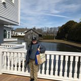

About Me

I am
participating in the UCONN Coding Bootcamp in downtown Stamford, CT. My goal is to complete this course and
all of
it's assignments to
completely understand web development. After the course is finished in January I will plan to have a new job
within the field. My hometown is Stamford, Connecticut and currently live in Bridgeport, CT. I work for the
Palace
Theater-Stamford Center for the Arts.
I also own two great cats-Macy and Zoe. Macy is 9 years old and a tuxedo cat and Zoe is 6 years old and a
tortoiseshell cat. Both are very dear to me.
My favorite food is Salmon fillet. I love reading, especially non-fiction, and aspire to be a writer as
well.